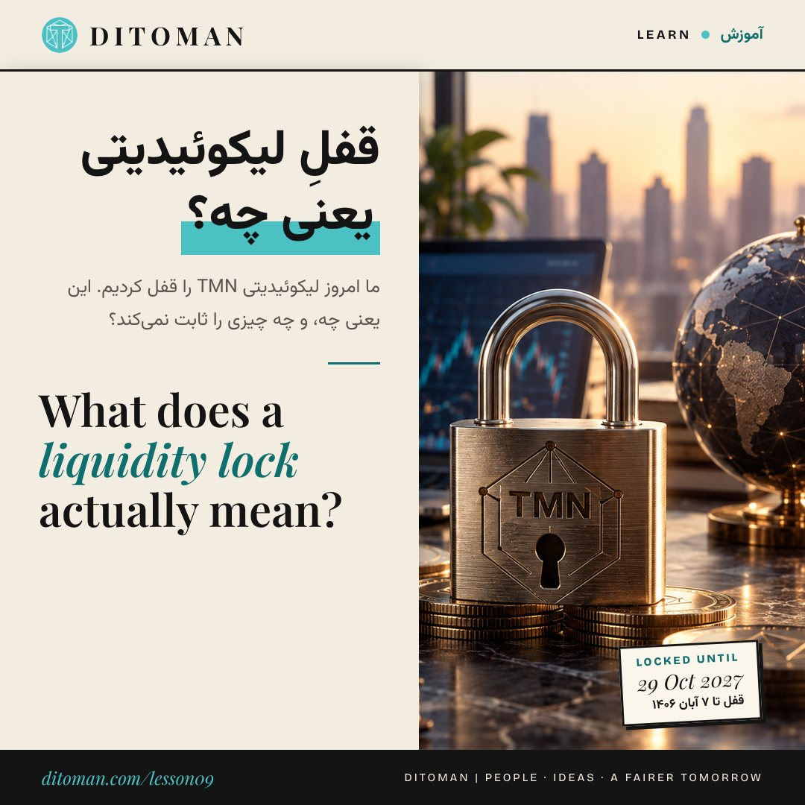

¿Qué significa realmente un bloqueo de liquidez?
قفل لیکوئیدیتی واقعاً یعنی چه؟
Hoy hemos bloqueado la liquidez de TMN. Esta lección usa nuestro propio bloqueo como ejemplo: qué es un pool de liquidez, qué son los tokens LP, de qué protege un bloqueo, qué no demuestra y cómo comprobar cualquier bloqueo por ti mismo.
امروز لیکوئیدیتی TMN را قفل کردیم. این درس قفل خود ما را نمونه قرار میدهد: استخر لیکوئیدیتی چیست، توکن LP چیست، قفل از چه چیزی محافظت میکند، چه چیزی را ثابت نمیکند، و هر قفلی را خودتان چطور بررسی کنید.
Contenido de la lección
محتوای درس
Lee la lección en inglés o persa. Esta estructura está pensada para futuros sistemas de cuestionarios, puntuación, reputación y recompensas.
درس را به فارسی یا انگلیسی بخوانید. این ساختار برای آزمونک، امتیاز، اعتبار و پاداشهایی طراحی شده که در آینده اضافه میشوند.
En la lección 05 enumeramos cinco comprobaciones que hacer con cualquier token antes de tocarlo. La quinta era: ¿hay liquidez real y está bloqueada? Hoy lo hicimos con nuestro propio token. Esta lección explica qué hicimos y qué significa.
01. Qué es la liquidez
Para que un token se compre y venda en un exchange descentralizado como PancakeSwap, alguien tiene que poner dos cosas juntas en un pool: el propio token y algo que la gente ya valora, como BNB. Los compradores meten BNB y sacan tokens; los vendedores hacen lo contrario.
Ese pool es la liquidez del token. Sin él, no hay dónde operar.
02. Los tokens LP son un recibo
Quien añade dinero al pool recibe tokens LP (tokens de proveedor de liquidez). Piensa en ellos como un recibo. Quien tenga el recibo puede devolverlo al pool en cualquier momento y retirar su parte de BNB y tokens.
03. El riesgo: un rug pull
Si el equipo de un proyecto tiene el recibo, puede vaciar el pool de la noche a la mañana. Los tenedores se quedan con tokens que ya no pueden vender. Se llama rug pull y es una de las formas más comunes de perder dinero con tokens pequeños.
04. Qué hace un bloqueo
Un bloqueo coloca los tokens LP en un contrato inteligente aparte con una fecha de desbloqueo. Hasta esa fecha nadie puede retirarlos, ni siquiera quien los bloqueó. Servicios como PinkLock, UNCX y Team Finance publican cada bloqueo como registro público, para que cualquiera pueda comprobarlo.
05. Lo que hicimos con TMN
El 29 de octubre de 2026 bloqueamos todos los tokens LP TMN/BNB de la billetera principal del proyecto en PinkLock, en BNB Smart Chain: primero 0,2277 LP y luego, tras añadir más liquidez en BNB el mismo día, un total de 0,3461 LP del pool de PancakeSwap V2. La fecha de desbloqueo es el 29 de octubre de 2027. El registro es público: Registro PinkLock #2089923.
Esto sigue a los pasos anteriores: se renunció a la propiedad del contrato, así que nunca podrán acuñarse nuevos TMN, y se retiró el 10% de la oferta original.
06. Lo que un bloqueo no demuestra
Un bloqueo elimina un riesgo concreto: que la liquidez bloqueada se retire antes de la fecha de desbloqueo. No demuestra que un token valga algo, que el proyecto vaya a triunfar ni que el precio vaya a subir.
Tampoco responde a las demás comprobaciones. La oferta de TMN sigue concentrada en billeteras de los fundadores, cosa que puedes ver en BscScan. Lo decimos abiertamente, y deberías comprobarlo en cualquier token, también en el nuestro.
07. Cómo comprobar tú mismo cualquier bloqueo
Abre el registro del bloqueo y confirma cuatro cosas: que la dirección del par coincide con el pool real del token, la cantidad bloqueada, la fecha de desbloqueo y qué parte del pool total representa esa cantidad. Un bloqueo que termina la semana que viene, o que cubre una parte mínima del pool, significa muy poco.
Qué sacar de esto
La confianza no es una promesa. Es algo que puedes comprobar. No confíes. Verifica.
در درس پنجم، پنج بررسی را گفتیم که قبل از دست زدن به هر توکنی باید انجام داد. بررسی پنجم این بود: آیا لیکوئیدیتی واقعی دارد و آیا قفل شده؟ امروز همین کار را برای توکن خودمان انجام دادیم. این درس توضیح میدهد چه کردیم و یعنی چه.
۰۱. لیکوئیدیتی چیست
برای اینکه یک توکن در صرافی غیرمتمرکزی مثل PancakeSwap خرید و فروش شود، کسی باید دو چیز را کنار هم در یک استخر بگذارد: خود توکن، و چیزی که مردم برایش ارزش قائلاند مثل BNB. خریدار BNB میگذارد و توکن برمیدارد؛ فروشنده برعکس.
این استخر، لیکوئیدیتی توکن است. بدون آن، جایی برای معامله وجود ندارد.
۰۲. توکن LP یک رسید است
هر کسی که به استخر پول اضافه کند، «توکن LP» میگیرد. آن را مثل یک رسید در نظر بگیرید. صاحب رسید هر وقت بخواهد میتواند آن را به استخر پس بدهد و سهمش از BNB و توکن را بیرون بکشد.
۰۳. خطر: راگپول
اگر رسید دست تیم پروژه باشد، میتوانند یکشبه استخر را خالی کنند. دارندگان توکن با توکنهایی میمانند که دیگر قابل فروش نیست. به این «راگپول» میگویند و یکی از رایجترین راههای ضرر کردن روی توکنهای کوچک است.
۰۴. قفل چه میکند
قفل، توکنهای LP را در یک قرارداد هوشمند جداگانه با تاریخ آزاد شدن مشخص میگذارد. تا آن تاریخ هیچکس، حتی کسی که قفل کرده، نمیتواند آنها را پس بگیرد. قفلکنندههایی مثل PinkLock، UNCX و Team Finance هر قفل را بهصورت رکورد عمومی منتشر میکنند تا هر کسی بتواند بررسیاش کند.
۰۵. ما با TMN چه کردیم
در ۷ آبان ۱۴۰۵ (۲۹ اکتبر ۲۰۲۶) همهی توکنهای LP استخر TMN/BNB را که در کیفپول اصلی پروژه بود در PinkLock روی شبکهی BNB قفل کردیم: اول ۰.۲۲۷۷ LP، و همان روز پس از افزودن BNB تازه به استخر، در مجموع ۰.۳۴۶۱ LP از استخر PancakeSwap V2. تاریخ آزاد شدن ۷ آبان ۱۴۰۶ (۲۹ اکتبر ۲۰۲۷) است. رکورد عمومی است: رکورد PinkLock شمارهی ۲۰۸۹۹۲۳.
این قدم بعد از قدمهای قبلی است: مالکیت قرارداد رنانس شده، پس هیچ TMN تازهای هرگز ساخته نمیشود، و ۱۰٪ عرضهی اولیه حذف شده است.
۰۶. قفل چه چیزی را ثابت نمیکند
قفل یک خطر مشخص را حذف میکند: اینکه لیکوئیدیتی قفلشده قبل از تاریخ آزاد شدن بیرون کشیده شود. ثابت نمیکند که توکن ارزش دارد، پروژه موفق میشود یا قیمت بالا میرود.
بررسیهای دیگر را هم جواب نمیدهد. عرضهی TMN هنوز در کیفپولهای بنیانگذاران متمرکز است و این را در BscScan میتوانید ببینید. ما این را صریح میگوییم، و شما باید برای هر توکنی، از جمله توکن ما، بررسیاش کنید.
۰۷. چطور هر قفلی را خودتان بررسی کنید
رکورد قفل را باز کنید و چهار چیز را چک کنید: آدرس استخر با استخر واقعی توکن یکی باشد، مقدار قفلشده، تاریخ آزاد شدن، و اینکه این مقدار چه سهمی از کل استخر است. قفلی که هفتهی بعد باز میشود یا فقط بخش کوچکی از استخر را پوشش میدهد، معنای زیادی ندارد.
چه برداشتی کنیم
اعتماد یک قول نیست؛ چیزی است که میشود بررسیاش کرد. اعتماد نکن؛ بررسی کن.
Aplicar la comprobación 5 a TMN
بررسی پنجم روی TMN
La lección 05 mostró que TMN no superaba dos de las cinco comprobaciones: oferta concentrada y liquidez sin bloquear. Con el bloqueo de hoy, la liquidez de la billetera principal del proyecto queda bloqueada hasta octubre de 2027. La concentración de la oferta sigue abierta, e informaremos a medida que cambie.
درس پنجم نشان داد که TMN در دو بررسی از پنج بررسی رد میشد: عرضهی متمرکز و لیکوئیدیتی قفلنشده. با قفل امروز، لیکوئیدیتی کیفپول اصلی پروژه تا اکتبر ۲۰۲۷ قفل است. تمرکز عرضه هنوز مسئلهای باز است و هر تغییری در آن را گزارش میکنیم.
Conceptos clave
مفاهیم کلیدی
- Pool de liquidez
- Los tokens LP como recibo
- Rug pull
- Bloqueo de liquidez y fecha de desbloqueo
- Registros públicos de bloqueo
- Lo que un bloqueo no demuestra
- استخر لیکوئیدیتی
- توکن LP بهعنوان رسید
- راگپول
- قفل لیکوئیدیتی و تاریخ آزاد شدن
- رکوردهای عمومی قفل
- آنچه یک قفل ثابت نمیکند
Objetivos de aprendizaje
اهداف یادگیری
- Explica qué es un pool de liquidez y por qué un token lo necesita.
- Describe qué representan los tokens LP.
- Explica cómo ocurre un rug pull.
- Leer un registro de bloqueo y comprobar el par, la cantidad, la fecha y la parte del pool.
- Nombra lo que un bloqueo no te dice sobre un token.
- توضیح دهید استخر لیکوئیدیتی چیست و چرا هر توکن به آن نیاز دارد.
- شرح دهید توکنهای LP نشاندهندهی چه چیزی هستند.
- توضیح دهید راگپول چطور اتفاق میافتد.
- رکورد یک قفل را بخوانید و جفتارز، مقدار، تاریخ و سهم آن از استخر را بررسی کنید.
- بگویید یک قفل چه چیزهایی را دربارهی توکن به شما نمیگوید.
Banco de preguntas futuro
بانک پرسشهای آزمونک آینده
Estas preguntas están preparadas para el futuro sistema de cuestionarios y participación de Ditoman. Más adelante podrían sustentar puntuaciones de aprendizaje, capas de reputación y una posible elegibilidad para recompensas en TMN.
این پرسشها برای سامانهی آزمونک و مشارکت آیندهی دیتومان آماده شدهاند. ممکن است بعدها مبنای امتیاز یادگیری، لایههای اعتبار و احتمالاً شرایط دریافت پاداش TMN شوند.
Pregunta 1
پرسش ۱
¿Qué representan los tokens LP?
توکنهای LP نشاندهندهی چه چیزی هستند؟
A. Una participación en la empresa del token
الف. سهمی از شرکت سازندهی توکن
B. Un recibo del dinero añadido a un pool de liquidez
ب. رسیدی برای پولی که به استخر لیکوئیدیتی اضافه شده
C. Un descuento en comisiones de trading
ج. تخفیف کارمزد معامله
D. Una votación de gobernanza
د. حق رأی در ادارهی پروژه
Respuesta correcta: B
پاسخ درست: ب
Pregunta 2
پرسش ۲
¿Qué es un rug pull?
راگپول چیست؟
Respuesta correcta: cuando quien tiene los tokens LP retira la liquidez y deja a los tenedores sin poder vender.
پاسخ درست: وقتی کسی که توکنهای LP دستش است لیکوئیدیتی را بیرون میکشد و دارندگان توکن دیگر نمیتوانند بفروشند.
Pregunta 3
پرسش ۳
Verdadero o falso: un bloqueo de liquidez demuestra que el precio de un token subirá.
درست یا نادرست: قفل لیکوئیدیتی ثابت میکند که قیمت توکن بالا میرود.
Respuesta correcta: Falso. Solo impide que la liquidez bloqueada se retire antes de la fecha de desbloqueo.
پاسخ درست: نادرست. قفل فقط جلوی بیرون کشیدن لیکوئیدیتی قفلشده را تا تاریخ آزاد شدن میگیرد.
Pregunta 4
پرسش ۴
¿Cuál de estas debes comprobar en un registro de bloqueo?
در رکورد یک قفل، کدامیک را باید بررسی کنید؟
A. La dirección del par
الف. آدرس جفتارز
B. La cantidad bloqueada y su parte del pool
ب. مقدار قفلشده و سهم آن از استخر
C. La fecha de desbloqueo
ج. تاریخ آزاد شدن
D. Todas las anteriores
د. همهی موارد
Respuesta correcta: D
پاسخ درست: د
Pregunta 5
پرسش ۵
¿Cuándo se desbloquea la liquidez bloqueada de TMN?
لیکوئیدیتی قفلشدهی TMN چه زمانی آزاد میشود؟
A. 29 de octubre de 2026
الف. ۲۹ اکتبر ۲۰۲۶
B. 29 de octubre de 2027
ب. ۲۹ اکتبر ۲۰۲۷
C. Nunca
ج. هرگز
D. Cuando decidan los fundadores
د. هر وقت بنیانگذاران بخواهند
Respuesta correcta: B
پاسخ درست: ب
Resumen en Instagram
خلاصه در اینستاگرام
Esta lección se presentó primero en el Instagram de Ditoman. La versión de Instagram ofrece un breve resumen visual, y esta página ofrece la versión completa.
خلاصهی تصویری این درس ابتدا در اینستاگرام دیتومان منتشر شد. نسخهی اینستاگرام یک معرفی کوتاه و تصویری است و این صفحه نسخهی کامل آموزشی آن است.